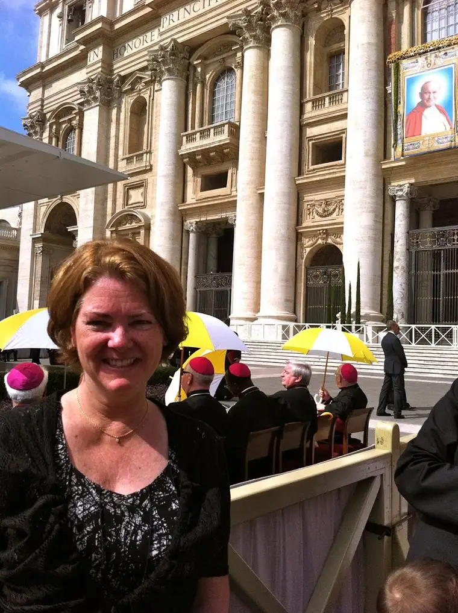
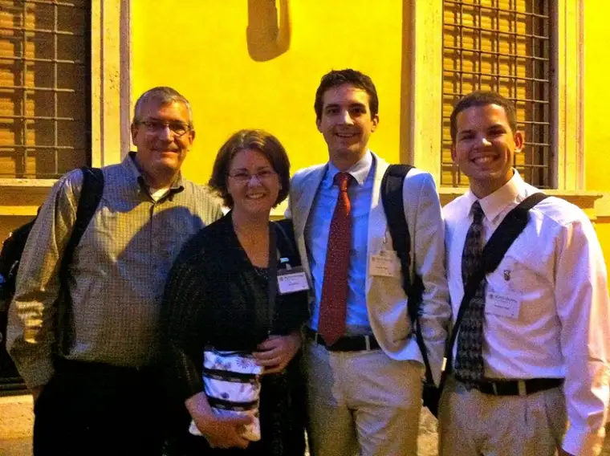
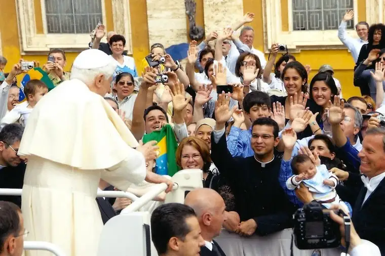
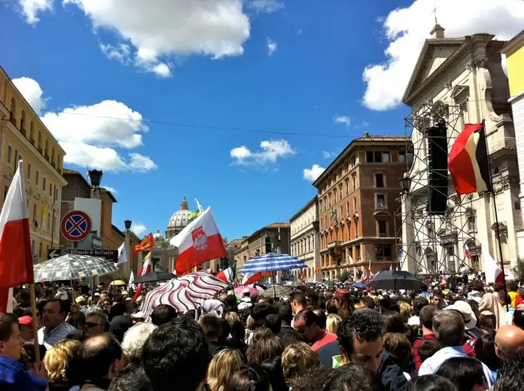

Greetings Readers! I’m pleased to introduce my friend Lisa Hendey to Peace Garden Writer. The timing of her guest post is quite fortunate for us all; she’s just returned from a very exciting adventure that would not have happened if she hadn’t stepped into the world of blogging. I hope you will take away some insight by reading of her once-in-a-lifetime journey overseas!
{kind=link}
 |
| Lisa M. Hendey, blogger and author, Rome, May 2011 |
{kind=link}
Dear Roxane,
What a treat to be invited to share a few thoughts on writing and my work with you and your readers at your lovely blog! I remember our first “meeting” online years ago through CatholicMom.com. You contacted me to share a very special piece of your writing on the topic of miscarriage with our readers. I recall how touched I was that you would be so willing to share an experience like this so that other mothers around the world might be helped through their own times of loss and pain. That experience of our first “meeting” mirrors the generosity of so many other talented writers like you who have made my work on the web so filled with joy, with inspiration, and with friendships that have drawn me closer not only to writers around the world, but to God and to my faith along the way.
You invited me to share a bit on the topic of my recent trip to Rome for the first ever “Vatican Blogger Meeting”. Being one of the fortunate (and randomly selected) 150 bloggers from around the world to attend this meeting was truly a dream come true.
 |
| Lisa and other bloggers from the Vatican bloggers’ meeting, May 2011 |
{kind=link}
The meeting was hosted by the Vatican’s Pontifical Councils for Culture and Social Communications. The Councils knew that many bloggers would likely be in Rome for the Beatification of our beloved Blessed John Paul II. They decided – on very short notice – to put together a special half-day event for bloggers. I honestly believe that the organizers were shocked by the excitement with which the blogging community greeted the news of this meeting. I personally knew so many who desired to attend, so upon learning of my invitation I set out to share the experience as widely as possible with my friends and fellow writers.
As it turned out, the Blogger meeting was only one of the amazing highlights of my trip to the Vatican. During the course of my five-day visit (planned on the spur of the moment and largely possible due to the support of my publisher Ave Maria Press and a private donor), I attended the Beatification mass, the Mass of Thanksgiving, a private mass in the crypt at St. Peters, and the Wednesday audience with Pope Benedict XVI. Sleep was in short supply, the food was amazing, and I learned that my “cute” American shoes were not made for walking on cobblestones. This was my first real trip to Rome, and I did everything possible to soak in as much of the experience as I could in such a quick time.
 |
| Lisa beaming during an encounter with the Pope during his Wednesday address |
{kind=link}
Certainly, for me, the highlight of my spur of the moment pilgrimage was standing in the thick of over a million fellow Catholics, crying for joy at the moment of the Beatification. Nestled between a group of Polish nuns and some pretty feisty Italian housewives, I cried and prayed and rejoiced with the rest of the crowd – each of us in our own native languages, but united as a one, holy, catholic and apostolic nation of believers whose lives had been touched by this incredible man. I remembered in my mind flashing back upon the three days I’d spent on my couch when Pope John Paul II died – in those moments I would have done anything to be present for his funeral… I remember pondering the crazy thought of jumping on a plane and simply camping out in St. Peter’s with the rest of the mourners. And now, there I was, six years later, huddled with so many who owed the intensity of their faith to many of the teachings of “JPII”, the only pope most of us had ever really known.
Honestly, a few weeks after this amazing experience, I am still praying about and absorbing so much of what I learned and experienced in Rome. Our Vatican Blogger Meeting was another highlight – as much for the informal relationships and conversations that flourished through “in real life” interactions as for what was formally presented that day. I’m thrilled at the direction that the Vatican has planned to take with respect to implementing new media technologies in evangelization, communications and catechesis. Over the next several months, as we watch their initiatives being unveiled, Catholics will be able to take great pride in the fact that our faith leaders really “get” the importance of being on the cutting edge in communications, but more importantly holding fast to the true teachings of our Church. My fellow bloggers around the world are equally committed to using our keyboards and mobile devices to help share our passion for the Good News. On our blogs, our Facebook profiles, and our Twitter accounts – and with whatever new tools come along – we are each living out the great commission in our own ways. This is an exciting time to be a Catholic blogger!
 |
| A lovely day for a visit to Rome and St. Peter’s Basilica! May 2011 |
{kind=link}
I welcome your readers’ specific questions about my experiences in Rome and invite all of you to visit me at CatholicMom.com or at my Facebook or Twitter pages. I hope you’ll check out my book The Handbook for Catholic Moms and that you’ll watch for the release of my newest book A Book of Saints for Catholic Moms in September.
Blessings to each of you and to your families!
Lisa
Q4U: Any questions for Lisa? You can ask them now!